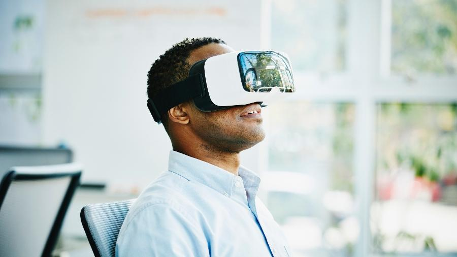

Meta Verso ganhando força
funciona o óculos do metaverso? Como funciona o óculos de realidade virtual pro metaverso Esse aparelho é a porta de entrada pro ambiente digital. É através dele que você vai poder fazer parte dos seus jogos preferidos, assistir vídeos em 360 graus e vivenciar simulações 3D. Só é preciso criar o seu avatar e aproveitar!
ler mais

5G finalmente chega no brasil
tecnologias surgem e impactam a sociedade numa velocidade impressionante. O progresso foi acelerado pela pandemia, que concretizou tendências de Tecnologia da Informação (TI) que eram esperadas apenas anos à frente. E investimentos em tecnologia digital continuarão sendo prioridade na estratégia de empresas que desejam aproveitar ao máximo as oportunidades de um mercado em reaquecimento. Inteligência artificial avançada, NFT, metaverso, 5G, Internet das Coisas e segurança digital apontam para algumas das principais expectativas do setor de tecnologia para o ano de 2022.
ler mais

Nova geração melhor desempenho
Silencioso e eficiente, o PS5 oferece um desempenho muito superior ao seu antecessor e conta com um dos melhores acessórios do mercado, o Dualsense. Além disso, o armazenamento do console pode ser substituído por SSD's de outras empresas após uma atualização.
ler mais